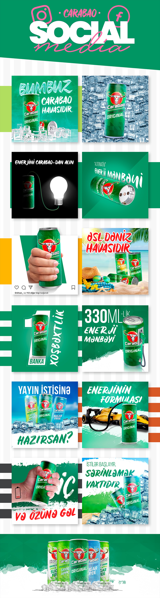

Məhsul mərkəzi
Qablaşdırma hər kompozisiyada əsas vizual fokus olaraq qalır.
Social Media Design
Carabao enerji içkisinin məhsul üstünlüklərini buz, hərəkət, canlı yaşıl rəng və yumor əsaslı vizual ideyalarla təqdim edən sosial media seriyası.

01 / Ümumi baxış
Yaşıl brend sahəsi və məhsul qabı sabit qalır, buz, əl, işıq, avtomobil və mövsüm səhnələri isə seriyaya davamlı yenilik gətirir.
Hər kompozisiya məhsulu əsas qəhrəman saxlayır və enerji, sərinlik, güc kimi fərqli mesajları vizual metaforalarla çatdırır.
Şablonlaşdırılmış ölçü və tipoqrafik ritm müxtəlif kampaniya mövzularını vahid sosial media axınında birləşdirir.
02 / Yanaşma
Qablaşdırma hər kompozisiyada əsas vizual fokus olaraq qalır.
Buz, hərəkət və gözlənilməz obyektlər mesajı sürətlə çatdırır.
Rəng, logo və tipoqrafiya bütün postları vahid kampaniyada saxlayır.
03 / Vizual istiqamət
04 / Dizayn sistemi
Əsas brend rəngi postlar arasında dərhal tanınma yaradır.
Məhsul və mesaj mobil ekranda ilk baxış üçün prioritetləşdirilir.
Vahid sistem mövsüm və məhsul variantlarına rahat uyğunlaşır.
05 / Növbəti
Növbəti layihəImpuls↗